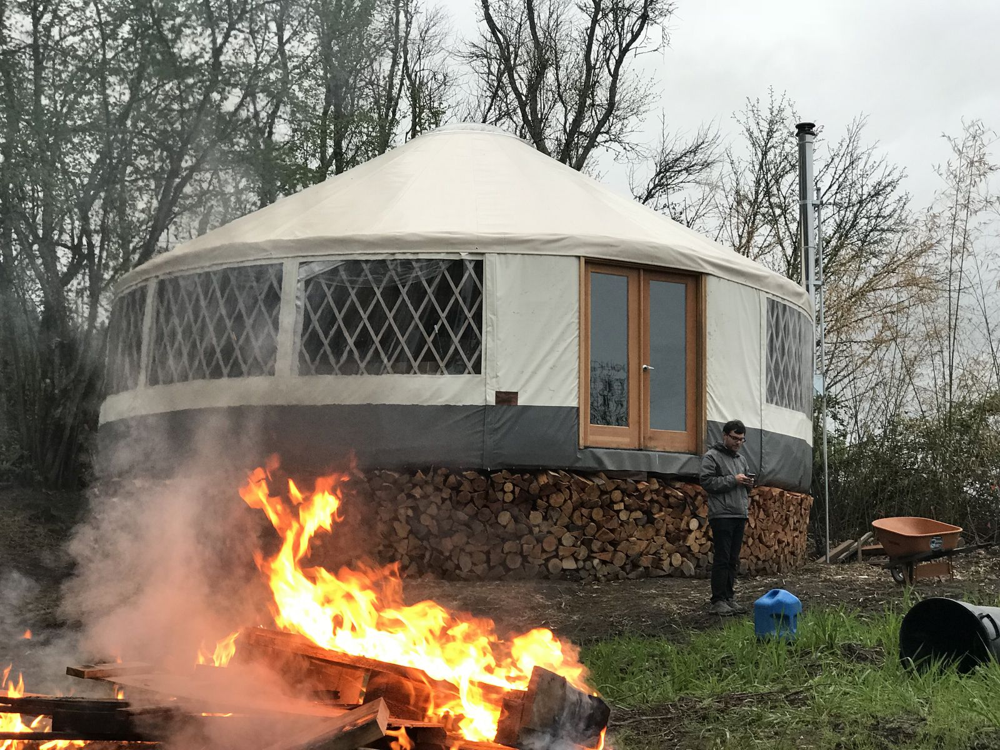
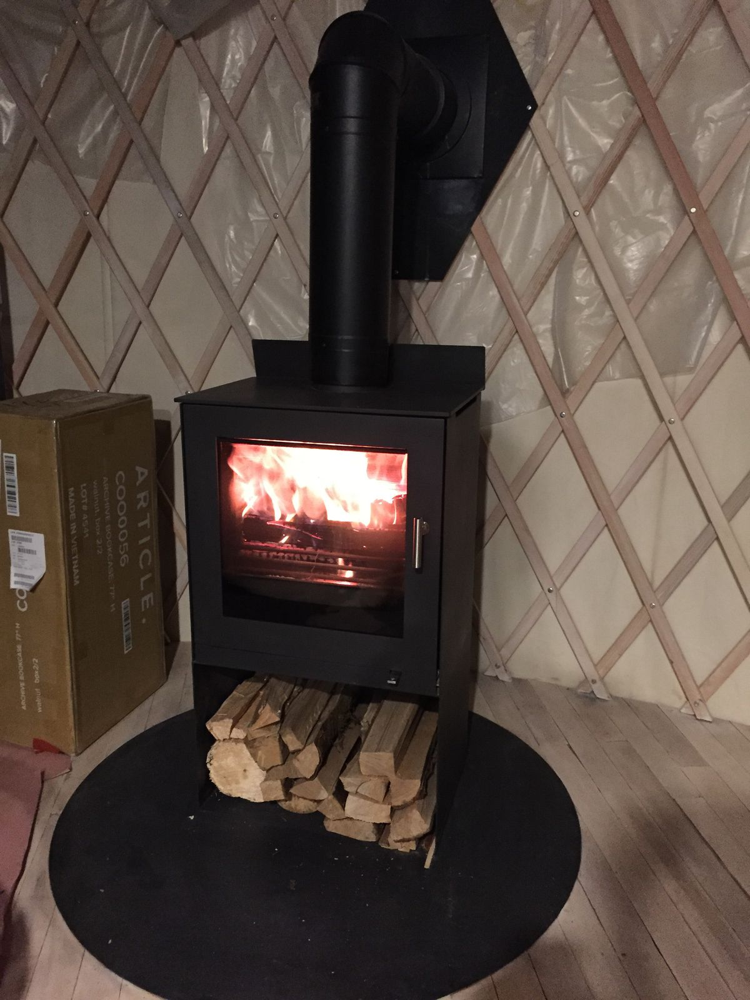
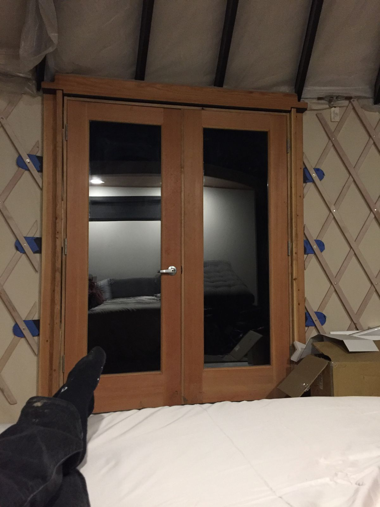
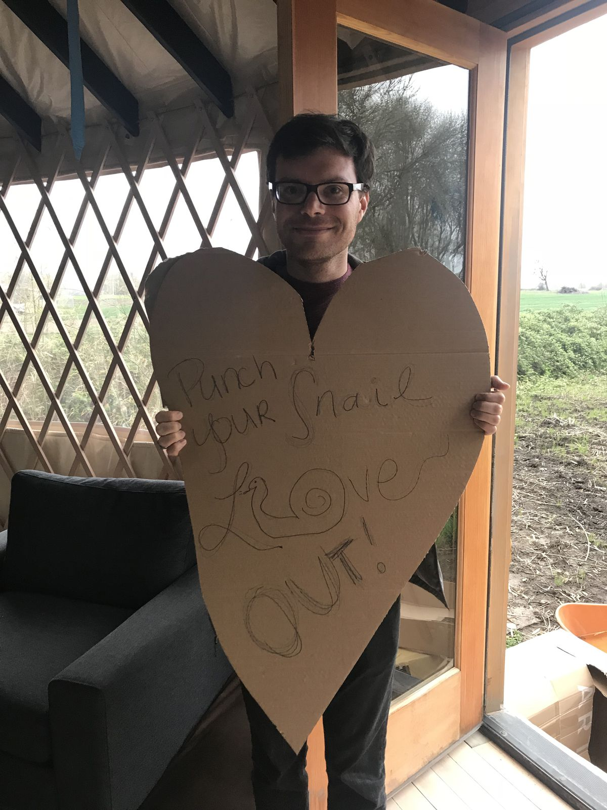

Yurtland, Oregon
I made it to Portland today. My old roommate and his girlfriend live in a yurt on the edge of the city. Kind of. They still live in his van until they complete construction of the yurt.

They have made a ton of progress since I was last here in the fall. It's really cool. There's a kitchen with a refrigerator, cabinets, and a sink, though the sink doesn't work yet. The bathroom and lofted bedroom are half built. There's a sweet Scandinavian wood furnace to keep the place warm at night. Electricity and lights are all set up.

There's still no plumbing. I'll be using the ports potty and not showering for a couple days. It will allow me to use all those odor-absorbing fancy clothes I got at REI a few weeks ago. There's also no internet, so I'm writing this post on my phone.

As soon as I arrived, I found that they had set up an obstacle course for me. I had to wade through many large and small boxes to get from the entrance to the finished part of the Yurt. I made it through in record time.

For dinner, we went into Portland to the Sudra, a vegan Indian-food restaurant. I got a lentil bowl and it was quite good.
Special for my arrival, they just received a pull out sofa bed and bedding. As they're still staying in the van, I will be the first person to sleep in the yurt! Tomorrow we will get their bed setup (it just arrived) so they can begin to sleep in the yurt too. If the bathroom flooring arrives, we can begin to work on that too.
Yes, I will go into Portland for ice cream and coffee and some touristy things, but I'll also be spending some time here at the yurt. It's very peaceful here and I can hear an orchestra of frogs outside.
I am also entering the final part of my trip, where I will be with close friends from now until I get on my plane back to Boston. I'm looking forward to spending time and catching up with them, as that, so far, has been the best parts of this trip.